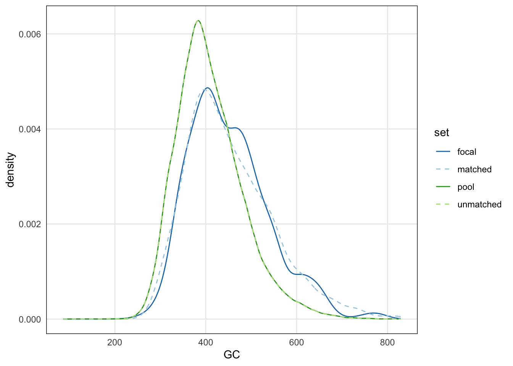

library(here)
library(readr)
library(dplyr)Genomic overlap stats with plyranges
task
Are Type 1 diabetes GWAS loci near to CD4+ accessibility peaks?
We download T1 lymphocyte 2 (CD4+) cells from CATlas:
http://catlas.org/humanenhancer/
Zhang K, et al. A single-cell atlas of chromatin accessibility in the human genome. Cell. 2021 Nov 24;184(24):5985-6001.e19. doi: https://doi.org/10.1016/j.cell.2021.10.024. PMID: 34774128; PMCID: PMC8664161.
We then download Type I diabetes GWAS loci from GWAS Catalog:
https://www.ebi.ac.uk/gwas/efotraits/MONDO_0005147
Finally, Pat Sullivan provides metadata on the genome in 1kb bins.
setup
bindata_file <- "bindata.1000.hg38.tsv.gz"
gwas_tab_file <- "gwas-t1d-031824-EFO_0009756.tsv.gz"
ccre_bed_file <- "T-lymphocyte-2-CD4.bed.gz"read in tabular data
bindata <- read_delim(here("CATlas",bindata_file))
bindata <- bindata |>
select(seqnames=chr, start=start0, end,
N, GC, tss, ldscore.sum) |>
mutate(start = start + 1)
bindata <- bindata |>
filter(N == 0, !is.na(ldscore.sum))
# save(bindata, file=here("CATlas","bindata.rda"))gwas_tab <- read_delim(here("CATlas",gwas_tab_file))Rows: 830 Columns: 38
── Column specification ────────────────────────────────────────────────────────────────────────────
Delimiter: "\t"
chr (26): FIRST AUTHOR, JOURNAL, LINK, STUDY, DISEASE/TRAIT, INITIAL SAMPLE SIZE, REPLICATION S...
dbl (10): PUBMEDID, CHR_POS, UPSTREAM_GENE_DISTANCE, DOWNSTREAM_GENE_DISTANCE, MERGED, SNP_ID_C...
date (2): DATE ADDED TO CATALOG, DATE
ℹ Use `spec()` to retrieve the full column specification for this data.
ℹ Specify the column types or set `show_col_types = FALSE` to quiet this message.gwas_tab <- gwas_tab |>
select(seqnames=CHR_ID, start=CHR_POS,
gene=`REPORTED GENE(S)`,
snp=SNPS, pvalue=`P-VALUE`) |>
filter(!is.na(start)) |>
mutate(width=1)read in range data
plyranges is dplyr for genomic range data
it is part of a project called “tidyomics”, providing an tidy-analysis approach to omics data, using an abstraction layer between the user-facing functions and the data objects.
this means it allows us to operate on genomic range data using familiar verbs like filter, select, mutate, group_by, and summarize.
we “pipe” between different operations using |> (the base R pipe function). doing x |> f |> g(type="foo") is the same as g( f(x), type="foo" )
there are a number of convenience functions like read_bed or read_narrowpeak, etc.
there are also packages allowing interfaces to data with gene expression, single cell sequencing, cytometry, etc.
library(plyranges)
ccre <- read_narrowpeaks(here("CATlas",ccre_bed_file))
genome(ccre) <- "hg38"bindata <- bindata |>
as_granges()
genome(bindata) <- "hg38"gwas <- gwas_tab |>
as_granges()
genome(gwas) <- "GRCh38"
gwasGRanges object with 566 ranges and 3 metadata columns:
seqnames ranges strand | gene snp pvalue
<Rle> <IRanges> <Rle> | <character> <character> <numeric>
[1] 6 32658698 * | HLA-DQB1 rs9273368 8e-40
[2] 10 6136651 * | PFKFB3 rs1983890 3e-08
[3] 6 90248512 * | BACH2 rs11755527 1e-07
[4] 2 43579243 * | THADA rs11888640 2e-06
[5] 6 32658698 * | HLA-DQB1 rs9273368 3e-78
... ... ... ... . ... ... ...
[562] 14 56754421 * | intergenic rs878889 8e-07
[563] 12 120536707 * | RNF10, COQ5 rs614226 2e-06
[564] 20 32943738 * | intergenic rs13045180 9e-06
[565] 20 60320788 * | RP5-1043L13.1 rs11698685 1e-06
[566] 8 122693916 * | RP11-973F15.1 rs4871297 2e-06
-------
seqinfo: 23 sequences from GRCh38 genome; no seqlengthsneed to convert to hg38 to perform overlaps:
library(GenomeInfoDb)
seqlevelsStyle(gwas) <- "UCSC"
gwas <- gwas |>
sortSeqlevels() |>
sort()
gwasGRanges object with 566 ranges and 3 metadata columns:
seqnames ranges strand | gene snp pvalue
<Rle> <IRanges> <Rle> | <character> <character> <numeric>
[1] chr1 2863195 * | TTC34, PRDM16 rs28600853 6e-06
[2] chr1 8347227 * | <NA> rs10399665 4e-08
[3] chr1 20693912 * | KIF17 rs17407280 7e-06
[4] chr1 24970252 * | RUNX3 rs10751776 3e-08
[5] chr1 35622060 * | PSMB2 rs574384 2e-08
... ... ... ... . ... ... ...
[562] chr22 39448788 * | <NA> rs5757680 5e-11
[563] chr22 39448788 * | <NA> rs5757680 8e-12
[564] chrX 136583619 * | CD40LG rs2807264 1e-08
[565] chrX 136949968 * | RBMX rs12863738 6e-08
[566] chrX 154717327 * | intergenic rs2664170 8e-09
-------
seqinfo: 23 sequences from hg38 genome; no seqlengthsour cCRE data look like:
ccreGRanges object with 51090 ranges and 6 metadata columns:
seqnames ranges strand | name score signalValue pValue
<Rle> <IRanges> <Rle> | <character> <numeric> <numeric> <numeric>
[1] chr1 9956-10355 * | NA_peak_156 14247 40.1210 1428.02000
[2] chr1 180581-180980 * | NA_peak_203 8288 31.9221 832.44100
[3] chr1 633825-634224 * | NA_peak_80 18041 42.0327 1811.10000
[4] chr1 778526-778925 * | NA_peak_122 6391 29.8000 643.09400
[5] chr1 778986-779385 * | NA_peak_77b 77 4.0625 9.81259
... ... ... ... . ... ... ... ...
[51086] chrY 14340740-14341139 * | NA_peak_134779 978 19.3609 100.399
[51087] chrY 19566983-19567382 * | NA_peak_125622a 4973 20.6778 500.369
[51088] chrY 19567623-19568022 * | NA_peak_52071b 1322 10.6361 135.021
[51089] chrY 19744602-19745001 * | NA_peak_130585b 3033 20.9512 306.498
[51090] chrY 20575448-20575847 * | NA_peak_99120 6186 26.5118 621.457
qValue peak
<numeric> <integer>
[1] 1424.75000 200
[2] 828.85100 200
[3] 1804.14000 200
[4] 639.12200 200
[5] 7.76245 200
... ... ...
[51086] 97.8555 200
[51087] 497.3770 200
[51088] 132.2830 200
[51089] 303.3280 200
[51090] 618.6670 200
-------
seqinfo: 24 sequences from hg38 genome; no seqlengths# select just one column, the 'score':
ccre_small <- ccre |> select(score)
ccre_smallGRanges object with 51090 ranges and 1 metadata column:
seqnames ranges strand | score
<Rle> <IRanges> <Rle> | <numeric>
[1] chr1 9956-10355 * | 14247
[2] chr1 180581-180980 * | 8288
[3] chr1 633825-634224 * | 18041
[4] chr1 778526-778925 * | 6391
[5] chr1 778986-779385 * | 77
... ... ... ... . ...
[51086] chrY 14340740-14341139 * | 978
[51087] chrY 19566983-19567382 * | 4973
[51088] chrY 19567623-19568022 * | 1322
[51089] chrY 19744602-19745001 * | 3033
[51090] chrY 20575448-20575847 * | 6186
-------
seqinfo: 24 sequences from hg38 genome; no seqlengthsa rough view on the MHC region:
mhc <- data.frame(seqnames="chr6", start=29e6, end=33e6) |>
as_granges()some overlap stats
length(gwas)[1] 566gwas |>
filter_by_overlaps(mhc)GRanges object with 44 ranges and 3 metadata columns:
seqnames ranges strand | gene snp pvalue
<Rle> <IRanges> <Rle> | <character> <character> <numeric>
[1] chr6 29058810 * | OR2W1 rs114631266 2e-06
[2] chr6 29931850 * | HLA-A rs2471863 8e-07
[3] chr6 29943253 * | MHC, HLA-A rs9260151 8e-08
[4] chr6 29946109 * | HLA-A rs34941730 2e-09
[5] chr6 30110498 * | TRIM31 rs2523989 2e-08
... ... ... ... . ... ... ...
[40] chr6 32714422 * | HLA-DQA2 rs35122968 4e-11
[41] chr6 32714617 * | HLA-DQA2 rs3997848 2e-14
[42] chr6 32830954 * | TAP2 rs1015166 4e-22
[43] chr6 32836637 * | TAP2 rs241427 4e-06
[44] chr6 32838614 * | TAP2 rs4148870 2e-06
-------
seqinfo: 23 sequences from hg38 genome; no seqlengthsgwas |>
join_overlap_left(ccre_small, maxgap=1e4)GRanges object with 1009 ranges and 4 metadata columns:
seqnames ranges strand | gene snp pvalue score
<Rle> <IRanges> <Rle> | <character> <character> <numeric> <numeric>
[1] chr1 2863195 * | TTC34, PRDM16 rs28600853 6e-06 NA
[2] chr1 8347227 * | <NA> rs10399665 4e-08 2259
[3] chr1 20693912 * | KIF17 rs17407280 7e-06 1941
[4] chr1 20693912 * | KIF17 rs17407280 7e-06 262
[5] chr1 24970252 * | RUNX3 rs10751776 3e-08 78
... ... ... ... . ... ... ... ...
[1005] chrX 136949968 * | RBMX rs12863738 6e-08 1645
[1006] chrX 154717327 * | intergenic rs2664170 8e-09 546
[1007] chrX 154717327 * | intergenic rs2664170 8e-09 176
[1008] chrX 154717327 * | intergenic rs2664170 8e-09 1636
[1009] chrX 154717327 * | intergenic rs2664170 8e-09 197
-------
seqinfo: 23 sequences from hg38 genome; no seqlengthsgwas |>
join_overlap_inner(ccre_small, maxgap=1e4)GRanges object with 750 ranges and 4 metadata columns:
seqnames ranges strand | gene snp pvalue score
<Rle> <IRanges> <Rle> | <character> <character> <numeric> <numeric>
[1] chr1 8347227 * | <NA> rs10399665 4e-08 2259
[2] chr1 20693912 * | KIF17 rs17407280 7e-06 1941
[3] chr1 20693912 * | KIF17 rs17407280 7e-06 262
[4] chr1 24970252 * | RUNX3 rs10751776 3e-08 78
[5] chr1 24970252 * | RUNX3 rs10751776 3e-08 1267
... ... ... ... . ... ... ... ...
[746] chrX 136949968 * | RBMX rs12863738 6e-08 1645
[747] chrX 154717327 * | intergenic rs2664170 8e-09 546
[748] chrX 154717327 * | intergenic rs2664170 8e-09 176
[749] chrX 154717327 * | intergenic rs2664170 8e-09 1636
[750] chrX 154717327 * | intergenic rs2664170 8e-09 197
-------
seqinfo: 23 sequences from hg38 genome; no seqlengthsgwas |>
join_overlap_left(ccre_small, maxgap=1e4) |>
filter(!duplicated(snp)) |>
summarize(nhit = sum(!is.na(score)))DataFrame with 1 row and 1 column
nhit
<integer>
1 226plotgardener
plotgardener provides “Coordinate-Based Genomic Visualization Package for R”
https://phanstiellab.github.io/plotgardener/
library(plotgardener)
gwas_for_plot <- gwas |>
join_overlap_left(ccre_small, maxgap=1e4) |>
filter(!duplicated(snp))
gwas_for_plot <- gwas_for_plot |>
as_tibble() |>
dplyr::rename(pos=start) |>
mutate(chrom = as.character(seqnames)) |>
mutate(p = pmax(pvalue, 1e-50)) |>
mutate(ccre = factor(case_when(
is.na(score) ~ "no",
TRUE ~ "yes")))plot #1
manhattan[manhattan1]genomeLabel[genomeLabel1]yaxis[yaxis1]plot #2
manhattan[manhattan1]genomeLabel[genomeLabel1]yaxis[yaxis1]legend[legend1]matching with nullranges
nullranges provides methods for construction of sets of “null regions”, to be used in enrichment analyses
it has two branches of functionality:
- matching Davis et al (2023)
- bootstrapping Wu et al (2023)
here, we will demonstring creating a null set by matching on covariates
bindata <- bindata |>
mutate(logLDS = log10(ldscore.sum+1))
gwas_plus <- gwas |>
join_overlap_left(bindata) |>
filter(!is.na(GC))library(ggplot2)
gwas_plus |>
filter(seqnames %in% paste0("chr",1:8)) |>
as_tibble() |>
ggplot(aes(seqnames, logLDS)) +
geom_boxplot()make a pool to draw from:
set.seed(5)
pool <- bindata |>
filter_by_non_overlaps(gwas, maxgap=1e4) |>
filter(!is.na(GC)) |>
slice(sample(n(), 1e5))library(nullranges)
m <- matchRanges(gwas_plus, pool, ~GC + logLDS)
length(gwas_plus)[1] 561length(matched(m))[1] 561plotCovariate(m, covar="GC")
plotCovariate(m, covar="logLDS")gwas_and_matched <- bind_ranges(
gwas=gwas_plus,
matched=matched(m),
.id="origin"
)gwas_and_matched |>
join_overlap_left(ccre_small, maxgap=1e4) |>
group_by(origin) |>
summarize(hits = sum(!is.na(score)))DataFrame with 2 rows and 2 columns
origin hits
<Rle> <integer>
1 gwas 746
2 matched 269